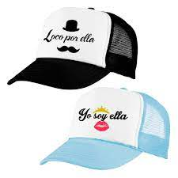
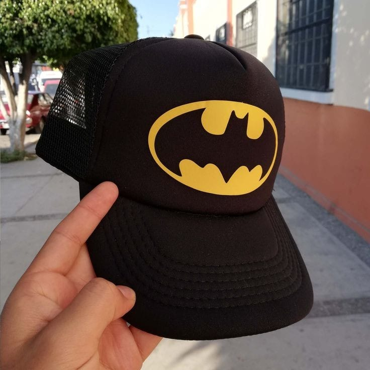

Sublimación en Gorras
La sublimación en gorras es una técnica de impresión que permite transferir imágenes, textos o diseños personalizados a gorras utilizando calor y tinta especial. Esta técnica es muy popular en el mundo del merchandising, la moda y la publicidad por su durabilidad y calidad de acabado.
Materiales necesarios para sublimar gorras
- Gorras sublimables (con recubrimiento de poliéster o frente de poliéster blanco)
- Impresora de sublimación (con tintas especiales de sublimación)
- Papel de sublimación
- Plancha térmica para gorras (curva, con ajuste de presión y temperatura)
- Diseño o imagen en formato digital
- Cinta térmica (opcional, para fijar el papel durante el planchado)

Paso a paso del proceso de sublimación en gorras
- Diseño: Crea o selecciona un diseño usando programas como Photoshop, Illustrator o Canva. Asegúrate de reflejar el diseño en modo espejo antes de imprimir.
- Impresión: Imprime el diseño en el papel de sublimación usando tinta de sublimación. Asegúrate de que esté en calidad alta.
- Preparación de la gorra: Coloca la gorra en la plancha térmica. Si es necesario, utiliza una almohadilla para asegurar que el frente quede firme y plano.
- Transferencia: Coloca el papel con el diseño sobre la gorra (la parte impresa hacia abajo) y fíjalo con cinta térmica.
- Planchado: Configura la plancha térmica para gorras entre 180°C y 200°C durante 40 a 60 segundos, con presión media.
- Retiro: Retira con cuidado el papel y deja enfriar la gorra.

Ventajas de la sublimación en gorras
- Alta calidad de impresión
- Colores vivos y duraderos
- Resistencia al lavado
- Personalización total del diseño
- No se percibe al tacto (no agrega grosor)

Cuidados y recomendaciones
- Lavar las gorras sublimadas a mano y con agua fría
- No usar blanqueadores ni detergentes fuertes
- No planchar directamente sobre el diseño
- Evitar la exposición prolongada al sol para conservar los colores

Conclusión
La sublimación en gorras es una excelente opción para quienes buscan productos personalizados y de alta calidad. Con las herramientas adecuadas y práctica, es posible lograr resultados profesionales tanto para uso personal como comercial.